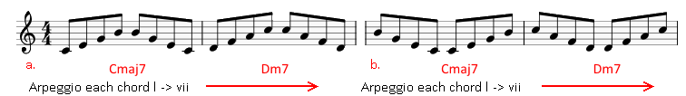
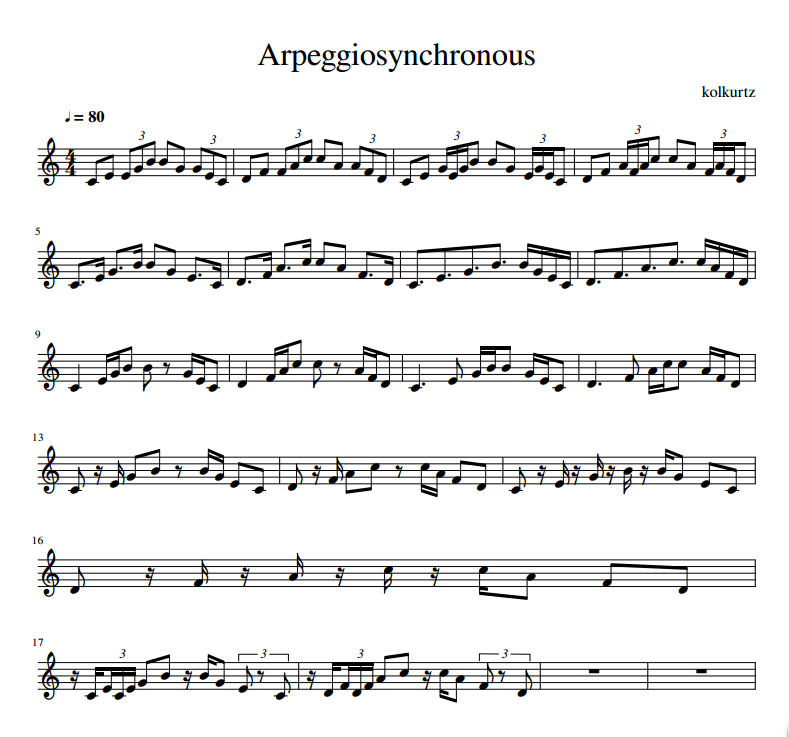

GROWL
I'd rather be playing guitar
 EN
EN
Ever get bored of practicing arpeggios. Either that or just feel like you really aren't under any pressure. Here is an antidote.
Being a masochist I often like to propose unreasonably difficult tasks for myself. The upshot is that this is the only way I get any better at playing guitar. The last two years have seen me expand my arpeggio practice using modes, the melodic minor and harmonic minor scales. My standard way to practice anything rigid like this is to play it at a starting position and then expand it modally i.e. up the neck starting with each measure of a scale.
This is my basic pattern. It has two parts a and b; both cycle all the chords in a key from I to vii. Part a is a 7th chord arpeggio ascending and then descending. Part b is the same 7th chords but this time starting with descent, followed by ascent. The first two chords only are shown for brevity. I haven't included tab because I do this for different arpeggio fingerings with E, A and D string roots too!
So here is the beast in all it's gory glory. It isn't pretty and it sounds like a calypso composer having a breakdown. BUT, it can make you a guitar tyrannosaur! Whilst I recommend playing against a metronome at the least, you really start flexing those mental muscles when you practice against a beat that has odd stresses and accents. That way once synchopated patterns arrive, you'll really have to rely on your inner clock. For that I recommend practising with Hydrogen (linux AND win).
For brevity I have scored only the first two chords for each sequence. I have also only scored the ascending (a part but no b) pattern. The rhythm pattern changes therefore every two bars. What you will hear on the recording is what is scored. Once you have a feel for the patterns though I advise playing each pattern for chord I all the way through vii, first in pattern a, then b!
Here's an audio version of Arpeggiosynchronous.
EXTENSION
I want to be clear at this point that I made this score to stress myself. I can do that because I know my weaknesses. I can't encourage you enough to make your own rhythm patterns with their own intricacies and then follow this method of scoring it and playing it against a drum track. As an aside, I build my scores with Musescore. It isn't perfect but it is free!
Once you have some familiarity with this or your own pattern, you can start applying it to some different arpeggios. For starters, use the 7th chords from a minor scale. Then why not the harmonic or melodic minors. Also, something I've yet to try with this (because I am scared) is to try a 3-9 arpeggio on the pattern. By that I mean an arpeggio that goes from the 3 of each chord to the 9th, stopping at the 5 and 7 along the way.